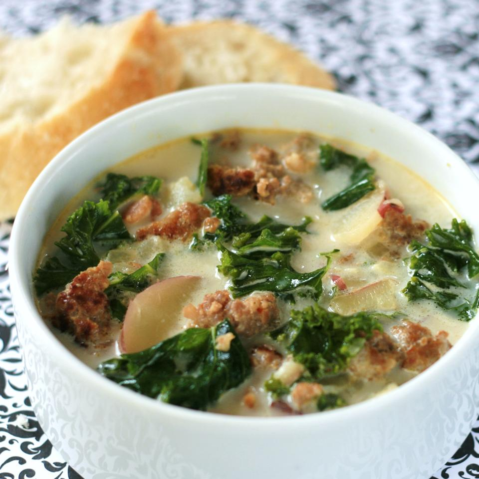

Super-Delicious Zuppa Toscana

Description
This is an oh-so-good recipe. Just the right amount of spice to make you take a cold drink but definitely keep coming back for more! This soup is irresistible!
Ingredients (For a Serving of 6)
- 1 pound bulk mild Italian sausage
- 1.25 teaspoons crushed red pepper flakes
- 4 slices bacon, cut into 1/2 inch pieces
- 1 large onion, diced
- 1 tablespoon minced garlic
- 5 (13.75 ounce) cans chicken broth
- 6 potatoes, thinly sliced
- 1 cup heavy cream
- 0.25 bunch fresh spinach, tough stems removed